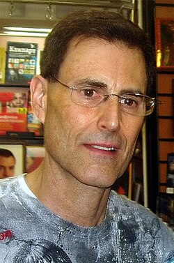

Uri Geller
Performer and self-described psychic

An Israeli performer famous for spoon bending. Russell Targ and Harold Puthoff tested him at SRI in 1972 and 1973 and reported results in Nature in 1974. Magicians and skeptics have argued his feats are stage tricks. 1
Open in the interactive Watcher
Related
- SRI psychic tests in Nature Tested at SRI
- Uri Subject of Puharich's Uri
Sources
- Uri Geller Wikipedia